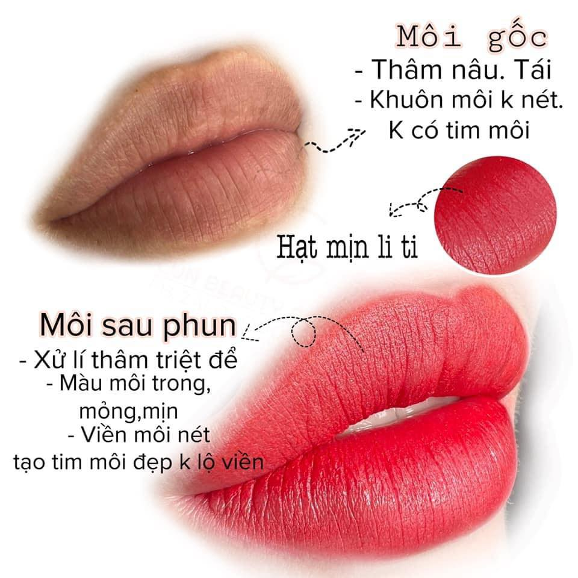

Khử Thâm Môi Kiêng Gì? 8 Điều Giúp Môi Hồi Phục Đẹp Hơn
Sau khi khử thâm môi, ngoài tay nghề của kỹ thuật viên thì chế độ chăm sóc cũng đóng vai trò quan trọng trong quá trình hồi phục. Một trong những câu hỏi được tìm kiếm nhiều nhất là khử thâm môi kiêng gì.
Nhiều người lo lắng rằng chỉ cần ăn sai hoặc chăm sóc chưa đúng thì màu môi sẽ không đều hoặc thời gian hồi phục kéo dài. Thực tế, mỗi người có cơ địa khác nhau, tuy nhiên việc tuân thủ hướng dẫn của kỹ thuật viên sẽ giúp môi hồi phục thuận lợi hơn.
Trong bài viết này, ELLY PMU sẽ chia sẻ những lưu ý quan trọng sau khi khử thâm môi.
Vì Sao Cần Kiêng Sau Khi Khử Thâm Môi?
Sau khi thực hiện, môi sẽ trải qua giai đoạn hồi phục tự nhiên. Trong thời gian này, việc chăm sóc đúng cách có thể giúp:
- Hỗ trợ môi hồi phục.
- Giữ môi sạch.
- Hạn chế tác động từ bên ngoài.
- Tạo điều kiện để môi ổn định tốt hơn.
Khử Thâm Môi Kiêng Gì?
Dưới đây là những điều bạn nên lưu ý sau khi khử thâm môi.
1. Hạn Chế Để Môi Quá Khô
Môi khô dễ gây cảm giác khó chịu và có thể ảnh hưởng đến quá trình hồi phục. Bạn nên sử dụng sản phẩm dưỡng môi theo hướng dẫn của kỹ thuật viên.
2. Không Tự Ý Bóc Lớp Bong
Đây là lỗi rất nhiều người mắc phải. Lớp bong sẽ tự rơi khi môi hồi phục, việc bóc bằng tay có thể làm môi tổn thương.
3. Hạn Chế Hút Thuốc Lá
Thuốc lá là một trong những nguyên nhân khiến môi sẫm màu theo thời gian. Nếu có thể, hãy hạn chế trong thời gian môi đang hồi phục.
4. Tránh Liếm Môi Thường Xuyên
Nhiều người có thói quen liếm môi khi môi khô. Điều này có thể khiến môi mất độ ẩm nhanh hơn.
Việc chăm sóc đúng cách ngay từ những ngày đầu sẽ giúp bạn yên tâm hơn trong quá trình hồi phục. ELLY PMU có hỗ trợ làm tận nhà theo lịch hẹn và hướng dẫn chăm sóc sau khi thực hiện.
5. Hạn Chế Tiếp Xúc Trực Tiếp Với Ánh Nắng
Khi ra ngoài, bạn nên che chắn cẩn thận để bảo vệ môi khỏi tác động của tia UV.
6. Uống Đủ Nước
Nước giúp cơ thể duy trì độ ẩm và hỗ trợ quá trình hồi phục tự nhiên.

7. Dưỡng Môi Theo Hướng Dẫn
Không nên tự ý thay đổi sản phẩm dưỡng nếu chưa được tư vấn.
8. Tái Khám Đúng Lịch
Nếu được hẹn kiểm tra lại, bạn nên đến đúng lịch để kỹ thuật viên đánh giá quá trình hồi phục.
Sau Khử Thâm Môi Nên Ăn Gì?
Một chế độ ăn uống cân bằng sẽ góp phần hỗ trợ quá trình hồi phục. Bạn nên ưu tiên:
- Rau xanh.
- Trái cây.
- Thực phẩm giàu vitamin.
- Uống đủ nước mỗi ngày.
Nếu có chế độ kiêng đặc biệt, hãy trao đổi trực tiếp với kỹ thuật viên để được hướng dẫn phù hợp.
Khử Thâm Môi Kiêng Ăn Gì?
Tùy cơ địa và hướng dẫn của kỹ thuật viên, bạn có thể cần hạn chế một số món dễ gây kích ứng hoặc khiến môi khó chịu trong giai đoạn đầu. Điều quan trọng là không tự áp dụng quá nhiều mẹo truyền miệng nếu chưa được tư vấn.
Khử Thâm Môi Uống Cà Phê Được Không?
Cà phê có thể làm cơ thể dễ thiếu nước hơn nếu uống quá nhiều. Trong giai đoạn môi đang hồi phục, bạn nên ưu tiên nước lọc và hỏi kỹ thuật viên nếu muốn dùng cà phê, trà sữa hoặc nước ngọt.
Khử Thâm Môi Kiêng Bao Lâu?
Thời gian kiêng và chăm sóc sẽ khác nhau tùy cơ địa, tình trạng môi và kỹ thuật thực hiện. Thông thường, bạn nên tuân thủ hướng dẫn riêng của kỹ thuật viên cho đến khi môi bong và ổn định hơn.
Sau Khử Thâm Môi Bao Lâu Ăn Bình Thường?
Khi môi đã hồi phục ổn định, bạn có thể sinh hoạt và ăn uống thoải mái hơn. Nếu môi còn khô, căng hoặc nhạy cảm, hãy tiếp tục chăm sóc nhẹ nhàng và tránh các món dễ gây khó chịu.
Những Sai Lầm Thường Gặp
Chỉ Kiêng Ăn Mà Không Chăm Sóc Môi
Việc dưỡng môi và giữ vệ sinh cũng quan trọng không kém.
Thấy Môi Bong Là Bóc
Đây là sai lầm phổ biến khiến môi hồi phục chậm hơn.
Không Tái Khám
Nếu có bất kỳ dấu hiệu bất thường nào, bạn nên liên hệ cơ sở thực hiện để được hỗ trợ.
Checklist Sau Khi Khử Thâm

Câu Hỏi Thường Gặp
Bạn nên hạn chế để môi khô, không bóc lớp bong, tránh liếm môi thường xuyên, hạn chế hút thuốc và chăm sóc theo hướng dẫn.
Nên ưu tiên rau xanh, trái cây, thực phẩm giàu vitamin và uống đủ nước mỗi ngày.
Nếu bạn có cơ địa dễ kích ứng, hãy hỏi kỹ thuật viên trước khi ăn hải sản trong giai đoạn môi đang hồi phục.
Nên hạn chế trong giai đoạn đầu và ưu tiên nước lọc. Nếu cần uống, hãy hỏi kỹ thuật viên theo tình trạng môi hiện tại.
Thời gian kiêng tùy cơ địa và tốc độ hồi phục. Bạn nên theo sát hướng dẫn riêng được đưa sau khi làm.
Một quy trình chăm sóc phù hợp không chỉ giúp môi hồi phục thuận lợi mà còn mang lại trải nghiệm tốt hơn sau khi thực hiện.
Kết Luận
Khử thâm môi kiêng gì là điều rất nhiều khách hàng quan tâm sau khi thực hiện dịch vụ. Thay vì chỉ tập trung vào việc kiêng ăn, bạn nên kết hợp chăm sóc môi đúng cách, giữ vệ sinh và tái khám theo hướng dẫn để môi hồi phục thuận lợi và đạt kết quả như mong muốn.